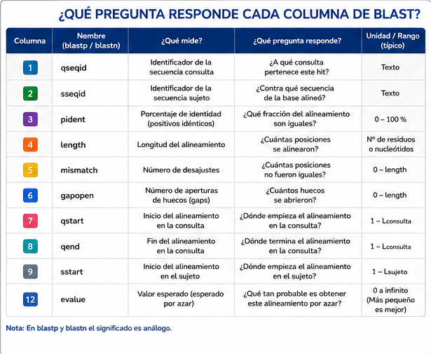
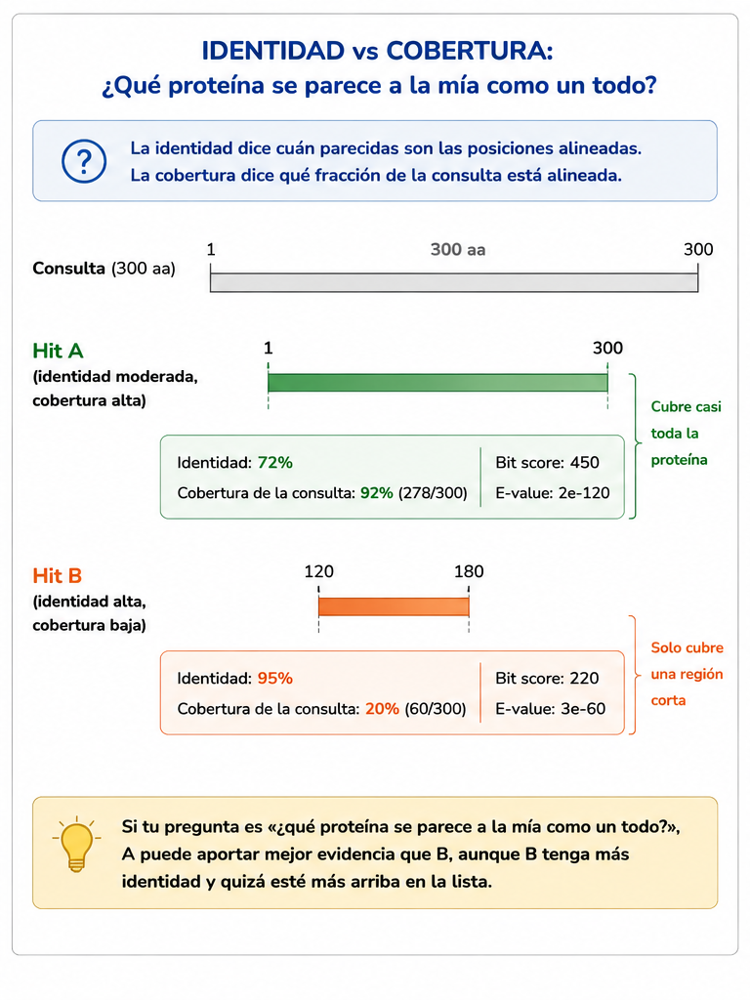
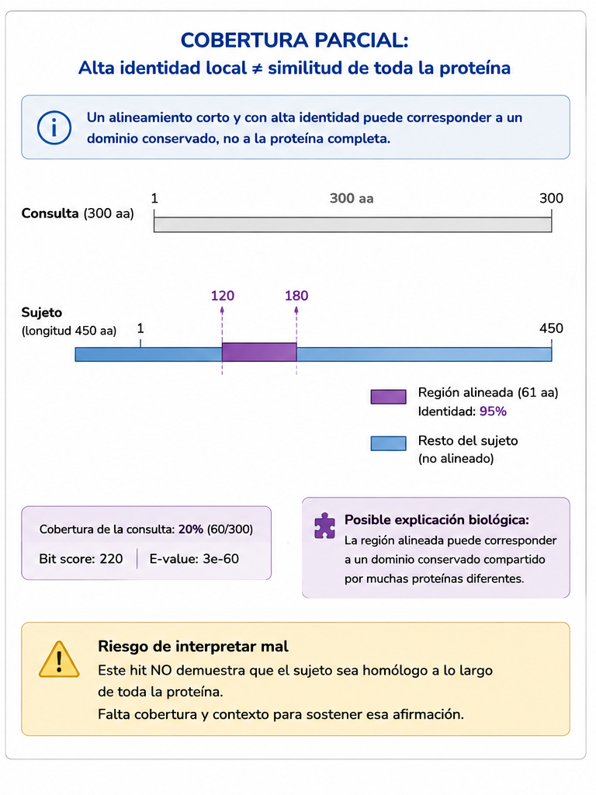
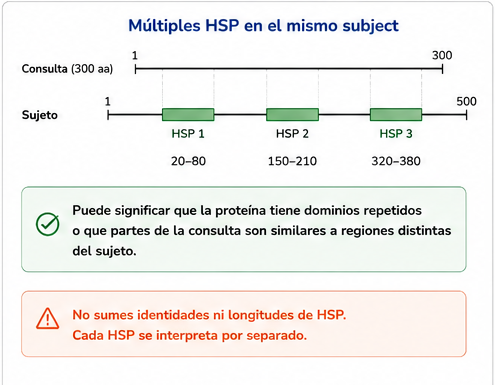
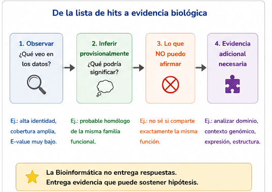
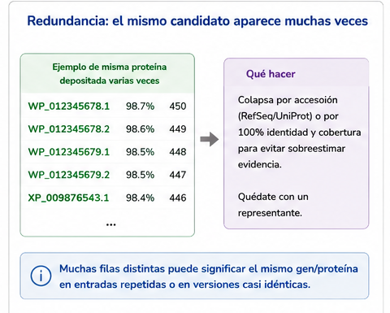

S32 — Interpretar: una lista de hits no es una conclusión
Antes de clase lees este módulo y haces un primer intento: mirar la salida tabular de S31 y decidir, por escrito, qué columnas mirarías primero y por qué. Durante el taller lees las métricas una por una, las cruzas y construyes un ranking argumentado de candidatos. Después del taller entregas la sección de interpretación del protocolo y la bitácora de IA. El primer intento es formativo.
Ficha del módulo
| Elemento | Descripción |
|---|---|
| Unidad | 6 — Comparar secuencias para construir hipótesis biológicas (portada) |
| Sesión | S32 · 2 h |
| Competencias | F (principal); D, C, A, G (integradas) |
| Pregunta de la sesión | Tengo muchos hits. ¿Cómo decido cuáles realmente aportan evidencia para responder mi pregunta biológica? |
| Datos | Las salidas reales de S31 (blastp / blastn sobre las tres familias) y, cuando ayuden, las globinas humanas |
| Herramientas | Ninguna nueva: blastp/blastn ya ejecutados; Unix de U4 (cut, grep, sort, uniq, head, awk) |
| Lectura previa | Este módulo · Pearson (2013), segunda mitad (evidencia de lectura de la unidad) |
| Producto | Una tabla interpretada de candidatos, con criterios, descartes y limitaciones |
| Cambio conceptual | Una lista de hits → no es una conclusión; hay que construir evidencia |
Relación con lo anterior
S31 resolvió el problema de escala: construiste una base, ejecutaste la búsqueda y obtuviste candidatos en segundos. Terminaste con un archivo .tsv ordenado por puntuación y con nueve columnas que todavía no sabías leer.
Hoy el problema cambia por completo.
BLAST ya hizo su trabajo. Ahora aparece una dificultad distinta: la búsqueda puede devolver decenas, cientos o miles de filas, y ninguna de ellas es una conclusión biológica.
RESULTADO DE BLAST
↓
NO ES
↓
CONCLUSIÓN BIOLÓGICAEntre las dos hay un proceso de razonamiento. Ese proceso es el contenido de la sesión.
IDEA CLAVE. Hasta ayer pensabas: tengo un hit → es el mejor. Hoy aprendes la frase del título: una lista de hits no es una conclusión. Hay que comparar, integrar métricas y construir evidencia.
Resultados de aprendizaje
Al terminar S32 podrás:
- Leer una fila del formato tabular de BLAST y decir qué pregunta responde cada columna relevante.
- Explicar qué miden la identidad, la cobertura y la longitud del alineamiento, y por qué ninguna basta sola.
- Distinguir un alineamiento que cubre casi toda la consulta de uno que solo cubre un fragmento, y decir qué riesgo biológico introduce el segundo.
- Interpretar el bit score y el E-value como medidas distintas —una de calidad del alineamiento, otra de cuán sorprendente es por azar— sin convertirlas en umbrales mágicos.
- Detectar múltiples HSP para la misma proteína y redundancia entre resultados.
- Jerarquizar candidatos con argumentos que integren varias métricas y el contexto de la búsqueda.
- Separar, por escrito, observación, inferencia provisional y lo que todavía no puede afirmarse.
- Evaluar críticamente una interpretación generada por IA que confunde métricas con conclusiones evolutivas.
Homología, ortología, paralogía y transferencia de función no se introducen hoy. Hoy construyes la evidencia. Mañana (S33) aprendes qué hipótesis evolutivas puede sostener —y cuáles no—.
Antes de empezar: lista de verificación
Guarda todo en results/s32/.
Ruta de la sesión
| Momento | Qué hacer | Tiempo estimado |
|---|---|---|
| Antes de clase | Leer §§1–4 · Práctica 1 · terminar Pearson (2.ª mitad) | 50 + 40 + 45 min |
| Durante el taller | Prácticas 2–5 · discusión de la Práctica 6 | 2 h |
| Después del taller | Corregir el primer intento · sección del protocolo · bitácora | 70 min |
Las secciones 1–7 son [Indispensable]. La sección 8 es [Consulta]: profundiza el E-value sin ser requisito para entregar.
1. El nuevo problema: muchos candidatos, poca certeza [Indispensable]
En S31 tu base tenía 57 secuencias y conocías la respuesta de antemano. Eso fue deliberado: te permitió comprobar si la herramienta encontraba lo que debía encontrar.
En una base real la lista cambia de carácter. Aparecen:
- muchos aciertos parecidos entre sí (secuencias casi idénticas depositadas mil veces);
- anotaciones incompletas («proteína hipotética», «domain-containing protein»);
- alineamientos que cubren tu proteína entera y otros que cubren solo un dominio;
- E-values parecidos con significados biológicos distintos.
La pregunta deja de ser ¿cómo encuentro proteínas parecidas? y pasa a ser:
Tengo muchos hits. ¿Cuáles aportan evidencia útil para mi pregunta, y cuáles no?
Esa es la única pregunta de hoy. Cada métrica aparece porque ayuda a responderla. Ninguna aparece «porque viene en la tabla».

Figura 32.1. Una salida de BLAST contiene evidencia. La conclusión la construyes tú —o no la construyes todavía—.
2. Anatomía de una fila tabular [Indispensable]
En S31 usaste -outfmt 6. Cada fila es un HSP: un tramo de tu consulta alineado con un tramo de un sujeto. Las doce columnas, en orden, son:
| # | Nombre | Qué pregunta responde |
|---|---|---|
| 1 | qseqid |
¿Cuál es mi consulta? |
| 2 | sseqid |
¿Cuál es el sujeto (el acierto)? |
| 3 | pident |
¿Qué porcentaje de las posiciones alineadas son idénticas? |
| 4 | length |
¿Cuántas columnas tiene este alineamiento? |
| 5 | mismatch |
¿Cuántas posiciones alineadas no coinciden? |
| 6 | gapopen |
¿Cuántas veces se abrió un hueco? |
| 7–8 | qstart qend |
¿Qué tramo de mi secuencia quedó alineado? |
| 9–10 | sstart send |
¿Qué tramo del sujeto quedó alineado? |
| 11 | evalue |
¿Cuán esperable sería ver algo así por azar en esta búsqueda? |
| 12 | bitscore |
¿Qué tan bueno es el alineamiento en una escala comparable? |
Hoy no memorizas la tabla. Aprendes a preguntarle a cada columna.

Figura 32.2. Leer una fila es preguntarle a cada campo. No es «entender BLAST»: es interrogar evidencia.
Si la misma proteína produce dos HSP en regiones distintas, verás dos filas con el mismo sseqid. Contar filas ≠ contar proteínas. Ya lo sospechaste en S31 cuando wc -l y sort -u no coincidían.
Cómo mirar tus columnas sin ahogarte
# Solo lo que necesitas para empezar: sujeto, identidad, longitud, coordenadas, E-value, score
cut -f 2,3,4,7,8,11,12 results/s31/ubiE_vs_tres-familias.tsv | headGuarda recortes interpretables en results/s32/, no reescribas los de S31:
mkdir -p results/s32
cut -f 2,3,4,7,8,11,12 results/s31/ubiE_vs_tres-familias.tsv \
> results/s32/ubiE_metricas.tsvPráctica 1 — Mirar la tabla antes de saber las respuestas (antes de clase, primer intento)
Antes de clase. Sin releer aún las secciones 3–7 (si puedes; si ya las leíste, no borres tu borrador: contrástalo después).
Abre results/s31/ubiE_vs_tres-familias.tsv y responde en media página:
- ¿Cuántas filas hay? ¿Cuántos
sseqiddistintos? - ¿Qué columnas mirarías primero para decidir cuáles hits importan? Nombra al menos tres y di qué pregunta crees que responde cada una.
- Elige las tres primeras filas y escribe, solo con lo que ves, qué te atreverías a afirmar y qué no.
- Formula en una frase tu criterio provisional: «Yo me quedaría con un hit si…».
Durante el taller. Guarda el texto sin reescribirlo todavía.
Entrega. El original y una corrección argumentada al final de la sesión: qué acertaste del significado de las columnas y qué tenías al revés.
3. Identidad: qué tan idéntico es el tramo alineado [Indispensable]
La columna pident es el porcentaje de identidad sobre las posiciones del alineamiento reportado.
Ya calculaste identidad en S30. Aquí cambia el marco:
| En S30 | En la salida de BLAST |
|---|---|
| Tú elegías el par | El programa eligió un HSP |
| Declarabas el denominador | El denominador es length (columna 4) |
| Podías ver el alineamiento completo | Aquí solo ves el número, hasta que pidas el alineamiento |
Concepto esencial — identidad sobre el tramo reportado.
pidentno dice «estas dos proteínas son 94 % idénticas de punta a punta». Dice: en el tramo que BLAST decidió alinear, el 94 % de las columnas sin contar cómo se definió el porcentaje interno del programa son idénticas. Si ese tramo es corto, un 94 % puede describir un fragmento minúsculo.
Con tus datos de la unidad —alineamientos globales aproximados de la consulta ubiE de R. conorii (248 aa) contra miembros de la misma familia— la identidad baja con la distancia, como ya viste en S30:
Sujeto (familia ubiE) |
Longitud | Identidad aproximada (global) |
|---|---|---|
| R. africae | 248 | ~99.6 % |
| R. typhi | 248 | ~85.9 % |
| E. canis | 231 | ~53 % |
| O. tsutsugamushi | 257 | ~53 % |
Esos números no sustituyen a los de tu .tsv: los de BLAST serán locales y pueden diferir en décimas. Sirven para recordar la escala que ya conoces antes de leer la columna 3.
Un pident alto no responde solo tu pregunta biológica. Responde «¿cuánto coinciden las letras del tramo alineado?». Todavía no sabes si ese tramo es casi toda la proteína o un dominio compartido con otra familia.
4. Cobertura: qué tanto de tu pregunta quedó alineado [Indispensable]
La identidad mira la calidad local del tramo. La cobertura mira su alcance.
BLAST no imprime un porcentaje de cobertura en -outfmt 6 por omisión, pero te da todo lo necesario para calcularla:
cobertura de la consulta ≈ (qend − qstart + 1) / longitud_de_la_consultaCon tu consulta de 248 aminoácidos:
qstart–qend |
Residuos cubiertos | Cobertura de la consulta |
|---|---|---|
| 1–248 | 248 | 100 % |
| 40–120 | 81 | ~33 % |
| 1–60 | 60 | ~24 % |
Concepto esencial — cobertura. Fracción de la secuencia (consulta o sujeto) que participa en el alineamiento. Una identidad alta con cobertura baja suele significar: comparten un pedazo, no necesariamente toda la proteína.
Por qué esto importa biológicamente
Imagina dos aciertos:
| Hit A | Hit B | |
|---|---|---|
| Identidad | 55 % | 92 % |
| Cobertura de la consulta | 98 % | 18 % |
| Qué sugiere | Parecido a lo largo de casi toda la proteína | Parecido fuerte en un fragmento corto |
Si tu pregunta es «¿qué proteína se parece a la mía como un todo?», A puede aportar mejor evidencia que B, aunque B tenga más identidad y quizá esté más arriba en la lista.

Figura 32.3. Identidad y cobertura responden preguntas distintas. El ranking por una sola de las dos miente.

Figura 32.4. Un alineamiento parcial excelente no prueba que las dos proteínas «sean la misma clase de cosa». Prueba que un tramo se parece.
Cómo calcularla sobre tu salida
# Cobertura de consulta (248 aa) redondeada a entero, junto con identidad y sujeto
awk -F'\t' '{
cov = ($8 - $7 + 1) / 248 * 100
printf "%s\t%s\t%.0f\t%s\n", $2, $3, cov, $12
}' results/s31/ubiE_vs_tres-familias.tsv \
| sort -t$'\t' -k3,3nr \
> results/s32/ubiE_por_cobertura.tsv
head results/s32/ubiE_por_cobertura.tsvEl 248 no es magia: es la longitud de ubiE_con.faa. Si cambias de consulta, cámbialo. Mejor aún: calcúlala una vez y guárdala en el protocolo.
Práctica 2 — Leer identidad y cobertura juntas (durante el taller)
Durante el taller.
Predice. Antes de calcular nada: en tu lista, ¿esperas coberturas altas para los
ubiE? ¿Qué esperarías de un falso amigo?Localiza identidad y coordenadas:
cut -f 2,3,4,7,8,11,12 results/s31/ubiE_vs_tres-familias.tsv | head -20Calcula la cobertura de la consulta (longitud 248) para cada fila y guarda la tabla.
Contrasta los cinco mejores por
bitscorecon los cinco mejores por cobertura. ¿Coinciden?Interpreta. Elige un hit con identidad alta y cobertura claramente menor que el resto (si no lo hay en tu salida, elige el de menor cobertura entre los reportados y di qué implica esa ausencia). Escribe cuatro frases: qué observas; qué no observas; qué riesgo habría si solo miraras identidad; qué decisión tomas respecto a ese hit.
Documenta en el protocolo el criterio: umbral o regla cualitativa que usaste para «cobertura aceptable» en esta pregunta —y aclara que no es universal.
Entrega. La tabla results/s32/ubiE_por_cobertura.tsv (o equivalente) y las cuatro frases.
5. Longitud del alineamiento y múltiples HSP [Indispensable]
La columna length es el número de columnas del HSP. No es lo mismo que la longitud de la proteína.
- Un HSP corto con identidad altísima puede ser un motivo conservado.
- Un HSP largo con identidad moderada puede describir mejor la proteína completa.
- Varios HSP para el mismo
sseqidpueden indicar dos regiones parecidas —o un artefacto que hay que mirar con cuidado—.
# ¿Algún sujeto aparece más de una vez?
cut -f 2 results/s31/ubiE_vs_tres-familias.tsv | sort | uniq -c | sort -nr | head
Figura 32.5. Contar filas no es contar proteínas. Antes de interpretar, agrupa por sseqid.
Concepto esencial — redundancia de resultados. Bases grandes suelen devolver muchas entradas casi idénticas (la misma proteína depositada desde genomas distintos, o isoformas). No son «más evidencia independiente»: son eco. Para tu pregunta biológica suele bastar un representante bien documentado, no los veinte clones del mismo hit.
6. Bit score: calidad del alineamiento en escala comparable [Indispensable]
La columna 12 (bitscore) es la que usó BLAST para ordenar tu lista en S31.
Concepto esencial — bit score. Medida normalizada de la calidad del alineamiento. A mayor bit score, mejor el HSP según el sistema de puntuación. A diferencia de la puntuación cruda, está en una escala que permite comparar búsquedas hechas con la misma matriz y los mismos costos de gap.
¿Para qué sirve hoy?
- Para entender por qué el orden de la tabla es el que es.
- Para comparar dos HSP de tu misma búsqueda: cuál alineó «mejor» según el modelo.
- No para decretar un umbral universal del tipo «arriba de 50 es bueno».
En la base de tres familias de S31, el salto de puntuación entre los verdaderos ubiE y el resto era enorme (lo anticipó la nota docente de S31 con alineamiento local exacto). Ese salto es evidencia de separación, no un número mágico exportable a otra base.
7. E-value: cuán sorprendente es el resultado por azar [Indispensable]
La columna 11 es el E-value (Expect value).
Concepto esencial — E-value. Número medio de alineamientos tan buenos o mejores que esperarías encontrar por azar en una búsqueda con las mismas condiciones (tamaño de base, longitud de consulta, sistema de puntuación).
Un E-value de
1e-20dice: en esta búsqueda, ver algo así por casualidad sería extraordinariamente raro. Un E-value de1dice: esperaría del orden de un acierto así solo por azar.
Lo que el E-value NO es
| No es… | Porque… |
|---|---|
| La probabilidad de que sean homólogos | La homología ni siquiera es el tema de hoy —y además el E-value no habla de ancestros |
| Un sello de «misma función» | Función no se deduce de un número de azar |
| Comparable a ciegas entre búsquedas distintas | Depende del tamaño de la base y de los parámetros |
| Un umbral único de la disciplina | «Menor que 0.001» es una convención de trabajo, no una ley |
Un hit con E-value bajo puede cubrir un dominio ubicuo; otro, con E-value similar, puede cubrir tu proteína entera con anotación coherente. Sin cobertura e identidad, el E-value está incompleto.
Lectura mínima, sin teatro
En tu base pequeña de 57 secuencias, casi cualquier parecido real tendrá E-values ridículamente bajos. Eso no demuestra que «el E-value siempre es decisivo»: demuestra que en una base minúscula el azar casi no tiene espacio. El número se vuelve más informativo —y más fácil de malinterpretar— cuando la base crece.
# Ordenar por E-value (columna 11) y mirar identidad + coordenadas
sort -t$'\t' -k11,11g results/s31/ubiE_vs_tres-familias.tsv \
| cut -f 2,3,7,8,11,12 \
| head8. Del número al azar: una intuición del E-value [Consulta]
Pearson (2013) insiste en algo que conviene grabar: la búsqueda por similitud produce candidatos estadísticamente sorprendentes, no etiquetas evolutivas.
Intuición útil:
bit score alto → el alineamiento es bueno según el modelo
↓
E-value bajo → además, es difícil de explicar por azar en ESTA base
↓
todavía falta → ¿cubre lo que me importa? ¿la anotación tiene sentido?
¿hay alternativas igual de buenas?Si quieres una sola frase para el protocolo:
El E-value cuantifica sorpresa bajo un modelo de azar; no cuantifica verdad biológica.
9. Anotación, contexto y ranking de evidencia [Indispensable]
Las métricas no viven solas. Un candidato se interpreta junto con:
- qué contiene la base (ya lo documentaste en S31: qué no podría aparecer);
- la anotación del sujeto, cuando existe (nombre del gen, producto, organismo);
- la pregunta biológica que planteaste al inicio.
Concepto esencial — ranking de evidencia. Ordenar candidatos no es copiar el orden de BLAST. Es construir una jerarquía argumentada: qué hits sostienen mejor tu pregunta, cuáles son redundantes, cuáles son alineamientos parciales engañosos y cuáles se descartan —con motivo—.

Figura 32.6. El producto de hoy no es «el mejor hit». Es una jerarquía justificada.

Figura 32.7. Principio 3 de la unidad: el mejor hit no es automáticamente la mejor explicación.
Preguntas que sí debes poder responder al cerrar
- ¿Cuál de estos hits explica mejor mi proteína, dada mi pregunta?
- ¿Por qué un hit con menor identidad podría aportar mejor evidencia?
- ¿Qué significa aquí una cobertura baja?
- ¿Qué diferencia hay, en la práctica, entre compartir un dominio y parecerse en toda la proteína?
- ¿Por qué dos hits pueden tener E-values similares y significados distintos?
- ¿Con cuál empezarías un estudio experimental —y qué le dirías al experimentador sobre la incertidumbre?
Nunca basta con: ¿cuál quedó primero?
Práctica 3 — Elegir el candidato mejor sustentado (durante el taller)
Durante el taller.
Trabajas con la misma pregunta biológica que registraste en S31 (si no la tienes, reformúlala en una línea antes de seguir).
Agrupa por
sseqidy detecta múltiples HSP.Recupera organismo y familia desde el FASTA de la base, como en S31.
Construye una tabla de como máximo ocho candidatos con:
sseqid organismo familia pident cobertura_q length E-value bitscore ¿redundante? decisión Elige el candidato mejor sustentado para tu pregunta y escribe el argumento en un párrafo que mencione al menos tres métricas y el contexto de la base.
Descarta explícitamente al menos dos hits (o filas) con motivo distinto en cada caso (ejemplo: redundancia; cobertura parcial; familia distinta; anotación insuficiente —el que aplique a tus datos).
Responde: si alguien te pidiera un solo hit para empezar un ensayo experimental, ¿cuál darías y qué incertidumbre le declararías?
Entrega. La tabla y el párrafo de argumentación.
«Mejor sustentado» ≠ «primero en la lista». Si tu elección coincide con la fila 1, dilo —y explica por qué las métricas lo respaldan, no porque estaba primero.
Práctica 4 — Cuando el alineamiento parcial induce errores (durante el taller)
Durante el taller.
Compara conceptualmente (y con tus números si aparecen) estas dos situaciones:
- Hit que cubre ~toda la consulta con identidad moderada.
- Hit que cubre un fragmento con identidad alta.
Escribe un escenario de error en primera persona:
«Si yo hubiera mirado solo la identidad, habría concluido que… Eso habría sido un error porque…»
Opcional si hay tiempo — globinas. Compara
NP_000508(HBA1) conNP_000549(HBA2) y conNP_005323(HBZ):# Solo inspección de longitudes y encabezados; un blastp puntual si el tiempo alcanza grep '^>' data/source/globinas/NP_000508.fasta \ data/source/globinas/NP_000549.fasta \ data/source/globinas/NP_005323.fastaHBA1 y HBA2 son la misma secuencia con distinto identificador (portada de la unidad). ¿Qué problema crea eso en un ranking ingenuo por identidad?
Entrega. El escenario de error y, si la hiciste, la nota sobre HBA1/HBA2.
10. Lo que hoy todavía NO puedes afirmar [Indispensable]
Al terminar tendrás candidatos jerarquizados. La tentación evolutiva vuelve.
| Puedes afirmarlo — es evidencia construida | No puedes afirmarlo todavía |
|---|---|
| «Este HSP cubre el 98 % de mi consulta con 56 % de identidad» | «Son homólogos» |
| «Descarté este hit porque solo cubre un dominio y la anotación es genérica» | «No están emparentados» |
| «Estos cinco hits son redundantes; elijo uno como representante» | «Elegí el ortólogo» |
| «El E-value es bajo en esta base de 57 secuencias» | «La probabilidad de que compartan función es del 99 %» |
| «Para mi pregunta, el candidato mejor sustentado es X, porque…» | «X tiene la misma función; puedo transferir la anotación» |
Hoy levantamos la prohibición de interpretar las columnas. No levantamos todavía la de usar el vocabulario evolutivo como conclusión. Homología, ortología, paralogía y transferencia de función son el puente explícito hacia S33.

Figura 32.8. Saber interpretar hits no cierra la unidad: abre la pregunta de qué hipótesis pueden sostener.
Práctica 5 — Criticar una interpretación de IA (taller y entrega posterior)
Durante el taller (discusión) y después (entrega).
Una IA responde, mirando un hit de tu búsqueda:
«El primer hit tiene 94 % de identidad, por lo tanto es un ortólogo con la misma función.»
Separa el texto en tres columnas:
Observación (verificable en tu .tsv)Inferencia (va más allá del número) Lo que no puede afirmarse todavía ¿Qué evidencia falta para sostener cada salto?
Reescribe la frase de la IA de modo que solo afirme lo defendible con S31+S32.
Registra el ejercicio en
doc/bitacora-ia.md.
El error más grave no es el «94 %». Es el «por lo tanto».
Entrega. La tabla de tres columnas, la lista de evidencia faltante y la frase reescrita.
Práctica 6 — (Cierre breve) Evidencia suficiente frente a insuficiente (cierre del taller)
Durante los últimos minutos del taller.
Completa en el pizarrón o en tu cuaderno:
Con lo de hoy PUEDO:
- rankear candidatos con argumentos
- detectar cobertura parcial y redundancia
- integrar identidad + cobertura + score + E-value
Con lo de hoy NO PUEDO todavía:
- decidir si la similitud implica homología
- distinguir ortólogos de parálogos
- transferir función con rigorEso no es un fracaso: es el puente a S33.
La sección del protocolo
Añade a doc/protocolo.md —sin borrar nada— una sección nueva:
## Unidad 6 · S32 — Interpretación de resultados
### Pregunta biológica
[La misma de S31, o su versión refinada]
### Criterios utilizados para evaluar los hits
[Qué reglas o preguntas usaste; no solo «el mejor E-value»]
### Métricas consideradas
| Métrica | Qué pregunta me respondió | Cómo la obtuve |
|---|---|---|
### Candidatos seleccionados
| sseqid | organismo | métricas clave | por qué entra |
|---|---|---|---|
### Resultados descartados
| sseqid o fila | motivo del descarte |
|---|---|
### Argumentos
[Párrafo: por qué el candidato principal es el mejor sustentado para TU pregunta]
### Limitaciones
[Qué no puedes afirmar; efecto de la base pequeña; qué pasaría en una base grande]
### Interpretación final (provisional)
[Solo evidencia y ranking; sin cerrar homología ni función]
### Uso de IA
[Qué afirmaciones separaste en observación / inferencia / injustificado]La tabla sin argumentos es una captura de pantalla con mejor tipografía. El protocolo registra el razonamiento.
Evidencia de la sesión
| Archivo | Contenido |
|---|---|
results/s32/*.tsv |
Recortes y tablas con cobertura / ranking |
results/s32/candidatos.md |
Tabla interpretada de la Práctica 3 |
doc/protocolo.md |
Sección Interpretación de resultados |
doc/bitacora-ia.md |
Práctica 5 |
| Primer intento + corrección | Práctica 1 |
| Reporte de lectura Pearson | Segunda mitad (evidencia de la unidad) |
Errores frecuentes y estrategias de diagnóstico
| Error | Por qué ocurre | Cómo se corrige |
|---|---|---|
| Quedarse con el primer hit | La lista ya viene ordenada | El orden es por bit score, no por utilidad para tu pregunta |
Mirar solo pident |
Es el porcentaje más familiar | Sin cobertura puede describir un fragmento |
| Tratar el E-value como probabilidad de homología | El nombre Expect suena a probabilidad de la hipótesis | Mide sorpresa por azar en esta búsqueda |
| Contar filas como proteínas | Cada fila es un HSP | Agrupa por sseqid |
| Copiar veinte hits casi idénticos | Parece más evidencia | Es redundancia; elige representantes |
| Declarar ortología o función hoy | El texto de la IA lo hace todo el tiempo | Hoy rankeas evidencia; S33 abre ese vocabulario |
| Inventar un umbral universal | Da seguridad | Declara el criterio para esta pregunta y sus límites |
| Dejar el protocolo en tabla pura | Es lo más rápido | Añade argumentos, descartes y limitaciones |
Rúbricas
Primer intento (Práctica 1) — formativo
| Nivel | Descriptor |
|---|---|
| Logrado | Entregó el análisis previo con un criterio provisional explícito y, al corregir, contrastó qué columnas había interpretado bien o mal |
| Parcialmente logrado | Entregó el intento, pero la corrección solo resume la clase sin volver sobre sus propias predicciones |
| Aún no logrado | No entregó primer intento, o lo reescribió después haciéndolo pasar por original |
Participación en el taller — formativo
| Nivel | Descriptor |
|---|---|
| Logrado | Calculó coberturas, detectó (o buscó activamente) múltiples HSP y argumentó en voz alta un descarte |
| Parcialmente logrado | Ejecutó los comandos pero eligió el primer hit sin justificar |
| Aún no logrado | No produjo tabla interpretada |
Tarea 1 — Tabla interpretada y protocolo (Prácticas 2 y 3)
| Nivel | Descriptor |
|---|---|
| Logrado | La tabla integra identidad, cobertura y al menos una métrica de significancia/score; hay descartes con motivos distintos; el párrafo nombra la pregunta biológica; el protocolo tiene argumentos y limitaciones |
| Parcialmente logrado | Hay tabla de métricas, pero la elección coincide con la fila 1 sin argumentar, o faltan descartes |
| Aún no logrado | Solo se entrega el .tsv de BLAST sin interpretación |
Tarea 2 — Cobertura parcial, lectura Pearson y crítica de IA (Prácticas 4 y 5)
| Nivel | Descriptor |
|---|---|
| Logrado | El escenario de error por cobertura parcial es concreto; la crítica a la IA separa observación/inferencia/injustificado y la frase reescrita no afirma ortología ni función; el reporte de Pearson está completo |
| Parcialmente logrado | Señala que la IA «se equivoca» sin desmenuzar el salto inferencial |
| Aún no logrado | Conserva «por lo tanto es un ortólogo» en la reescritura |
Autoevaluación
- ¿Puedo explicar por qué un resultado de BLAST no es una conclusión biológica?
- ¿Puedo decir qué pregunta responde la identidad y cuál la cobertura?
- ¿Puedo detectar un alineamiento parcial potencialmente engañoso?
- ¿Puedo explicar qué mide el E-value sin decir «probabilidad de homología»?
- ¿Puedo justificar un ranking que no copie el orden del archivo?
Semáforo de salida, en una línea:
- 🟢 Puedo defender un candidato con varias métricas y declarar qué no afirmo todavía.
- 🟡 Sé qué es cada columna, pero aún elijo por instinto el primero.
- 🔴 Confundo E-value con prueba de función, o no calculé cobertura.
Cierre con IA: clásico frente a asistido
Ya hiciste a mano el ranking de la Práctica 3.
- Pídele a una IA que, a partir de un fragmento de tu
.tsv, elija «el mejor hit» y explique por qué. - Compara su argumento con el tuyo. ¿Integró cobertura? ¿Declaró limitaciones? ¿Saltó a ortología?
- Pídele después que solo señale qué afirmaciones de su primera respuesta no están sustentadas.
- Anota en la bitácora si la segunda pasada fue más prudente —y si aún así omitió algo que tú sí viste en tus datos.
Anexo A. Correspondencia resultado–actividad–evidencia–criterio
| RA | Actividad | Evidencia | Criterio | Momento | Nivel en S32 |
|---|---|---|---|---|---|
| Leer el formato tabular | §§2–3, Práctica 1 | Primer intento + corrección | Asocia columnas con preguntas | Antes / después | Comprensión |
| Integrar identidad y cobertura | §4, Práctica 2 | Tabla con cobertura | Explica un caso donde una métrica sola engaña | Taller | Ejecución |
| Interpretar score y E-value | §§6–7 | Notas en protocolo | Define ambos sin umbral mágico | Taller | Comprensión |
| Detectar HSP múltiples y redundancia | §5, Práctica 3 | uniq -c + tabla |
Agrupa por sseqid y descarta ecos | Taller | Ejecución |
| Jerarquizar con argumentos | Práctica 3 | candidatos.md + protocolo |
Menciona ≥3 métricas y la pregunta | Taller / después | Ejecución |
| Separar observación de inferencia | §10, Práctica 5 | Bitácora | No afirma homología/función | Después | Diseño anticipado |
| Criticar una IA | Práctica 5 | Bitácora | Reescribe sin el «por lo tanto» injustificado | Después | Ejecución |
Anexo B. Alineación transversal
| Dimensión | Cómo se trabaja en S32 |
|---|---|
| Reproducibilidad | Los recortes salen de los .tsv de S31 con comandos registrados; criterios de selección quedan en el protocolo |
| Verificación | Se comprueba que filas ≠ proteínas; se recalcula cobertura a partir de coordenadas |
| Validación | El primer intento (Práctica 1) funciona como línea base frente a la interpretación posterior |
| Robustez | Se compara el orden por score con el orden por cobertura; se pregunta qué cambiaría en una base grande |
Glosario
| Español | Inglés | Qué es |
|---|---|---|
| Anotación funcional (como dato) | Functional annotation | Etiqueta de función asociada a una secuencia en la base; no es tu conclusión |
| Bit score | Bit score | Calidad normalizada del alineamiento |
| Cobertura | Coverage / query coverage | Fracción de la secuencia que participa en el alineamiento |
| E-value | Expect value | Número esperado de aciertos iguales o mejores por azar en esa búsqueda |
| Evidencia | Evidence | Observaciones y métricas que sostienen (o no) una afirmación |
| HSP | High-scoring Segment Pair | Tramo alineado de alta puntuación; una fila en -outfmt 6 |
| Identidad / porcentaje de identidad | Identity / percent identity | Fracción de posiciones idénticas en el tramo alineado |
| Jerarquía / ranking de evidencia | Evidence ranking | Orden argumentado de candidatos según utilidad para la pregunta |
| Longitud del alineamiento | Alignment length | Número de columnas del HSP |
| Redundancia | Redundancy | Resultados casi equivalentes que no aportan evidencia independiente |
Distribución estimada de las dos horas
| Tiempo | Actividad |
|---|---|
| 0:00–0:10 | Puesta en común de la Práctica 1: qué columnas creían importantes |
| 0:10–0:25 | Resultado ≠ conclusión. Anatomía de la fila. Figuras 32.1 y 32.2 |
| 0:25–0:50 | Identidad → cobertura. Práctica 2. Figuras 32.3 y 32.4 |
| 0:50–1:05 | Múltiples HSP, redundancia, bit score. Figura 32.5 |
| 1:05–1:20 | E-value sin magia. Contraste con Pearson |
| 1:20–1:45 | Práctica 3 — ranking argumentado. Figuras 32.6 y 32.7 |
| 1:45–1:55 | Práctica 5 — la frase de la IA, en voz alta |
| 1:55–2:00 | Figura 32.8 y puente a S33. Semáforo de salida |
No proyectes identidad, cobertura, score y E-value en el mismo instante. La sesión está escrita en ese orden precisamente para que cada métrica tenga un para qué antes de pedirle al estudiante que las combine.
Lo que todavía falta
Hoy conseguiste algo que ayer no tenías: mirar una lista de BLAST y salir con evidencia jerarquizada, no con una fila copiada.
Y ahora aparece la limitación siguiente —mejor que la anterior, pero limitación al fin—.
Aunque ya sabes qué hits mirar, todavía no puedes responder con rigor:
- ¿Qué significa que dos proteínas sean homólogas?
- ¿Toda similitud implica homología?
- ¿Puedo transferir función?
- ¿Qué diferencia hay entre ortólogos y parálogos?
- ¿Qué evidencia evolutiva falta para sostener una hipótesis y no solo un ranking?
Tener evidencia interpretada no es tener una historia evolutiva. Ese es el trabajo de S33.
Referencias
- Altschul, S. F., Gish, W., Miller, W., Myers, E. W., & Lipman, D. J. (1990). Basic local alignment search tool. Journal of Molecular Biology, 215(3), 403–410. https://doi.org/10.1016/S0022-2836(05)80360-2
- Altschul, S. F., Madden, T. L., Schäffer, A. A., Zhang, J., Zhang, Z., Miller, W., & Lipman, D. J. (1997). Gapped BLAST and PSI-BLAST: a new generation of protein database search programs. Nucleic Acids Research, 25(17), 3389–3402. https://doi.org/10.1093/nar/25.17.3389
- Camacho, C., Coulouris, G., Avagyan, V., Ma, N., Papadopoulos, J., Bealer, K., & Madden, T. L. (2009). BLAST+: architecture and applications. BMC Bioinformatics, 10, 421. https://doi.org/10.1186/1471-2105-10-421
- Pearson, W. R. (2013). An introduction to sequence similarity («homology») searching. Current Protocols in Bioinformatics, 42, 3.1.1–3.1.8. https://doi.org/10.1002/0471250953.bi0301s42 — lectura obligatoria; evidencia de lectura asociada a esta sesión